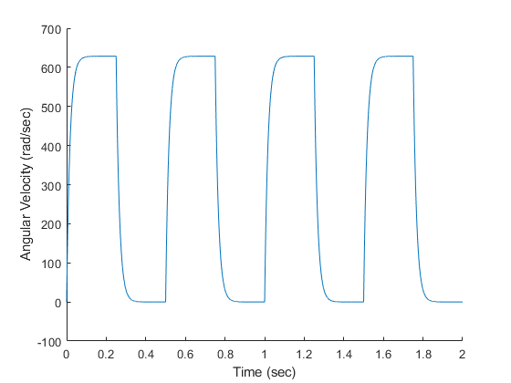

Activity 2
3/5/21 Michael White Section 3 / Online
close all; clear all; clc; % Define parameters to be used Kt = 7.68e-3; Kb = 7.68e-3; L = 0.18e-3; J = 3.9e-7; bm = 8.148e-7; Ra = 2.6; % Run the simulation simout = sim('DC_Motor_Simulation_Act2'); % Generate figure and plot results figure; hold on; plot(simout.Speed); xlabel('Time (sec)'); ylabel('Angular Velocity (rad/sec)'); % WRITTEN RESPONSES: % This system is clearly a first order system response, as it is simply % rising up to the maximum value in each trial, and not overshooting. % In addition, the governing function is a first order equation. % This activity asks for the max RPM that the motor reaches, but the output % for this system is in radians per second. This conversion and output can % be seen below, with the result being written to the command window. % Calculating the max RPM (including conversion from rad/sec) maxRPM = max(simout.Speed.Data)*9.5492965; disp(strcat("The max RPM reached by the motor is ",num2str(maxRPM))); % Isolating the data to the first curve (contained in first 0.2 seconds) calculationData = simout.Speed.Data(simout.Speed.Time <= 0.2); calculationTime = simout.Speed.Time(simout.Speed.Time <= 0.2); % Finding the time constant using the 63.2% method maxValue = max(calculationData); timeConstantValue = maxValue*0.632; absDiffList = abs(calculationData-timeConstantValue); timeConstantPoint = ... [calculationTime(absDiffList == min(absDiffList)),... calculationData(absDiffList == min(absDiffList))]; % Display the calculated time constant disp(strcat("The time constant of the system is ",num2str(timeConstantPoint(1))));
The max RPM reached by the motor is 6001.5095 The time constant of the system is 0.016463